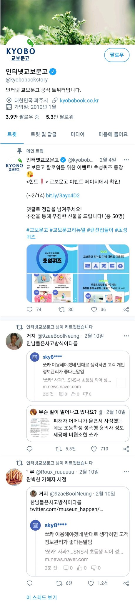
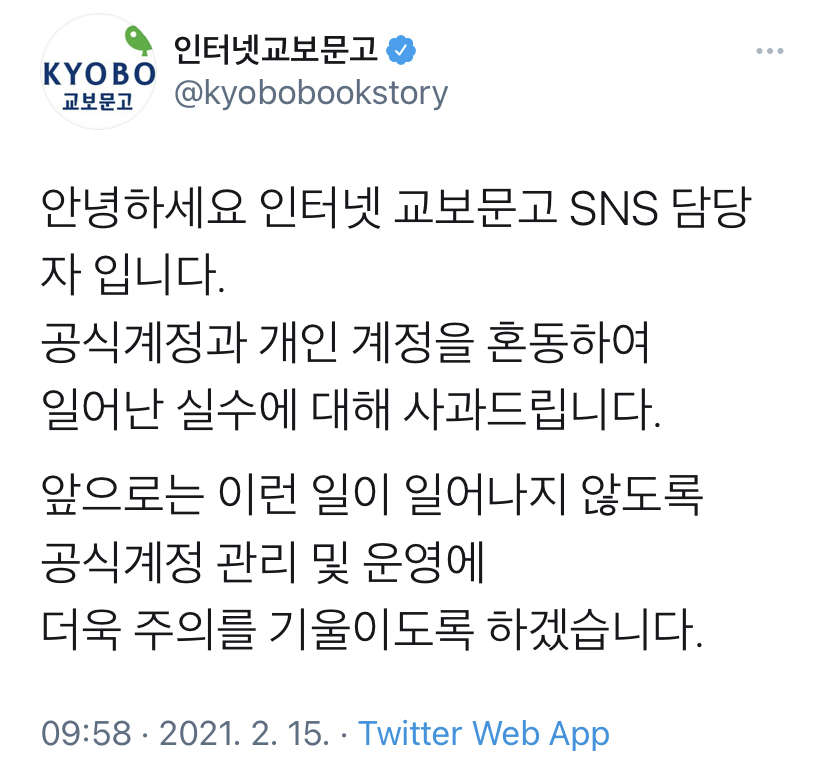
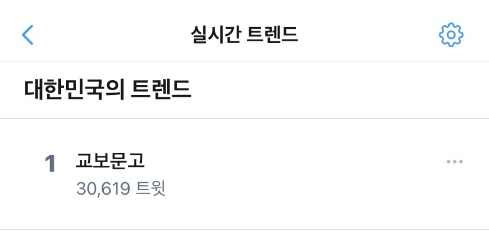

2월 10일 교보문고 트위터 공식계정에 다음과 같은 트윗들이 리트윗되었다.

15일 오전 9시사과문이 올라왔다.

공식계정의 팔로워가 1만 명 넘게 증가했다. 리트윗한 직후였던 화면 캡처 속 공식계정의 팔로워 수는 5.3만명이었으나, 15일 오후 2시 57,600여 명, 19일 저녁 65,000여 명으로 사건 이후로 빠른 속도로 증가하였다.
사과문이 올라온 2월 15일 관련 트윗 30,000여 개로 대한민국 트위터 실시간 트렌드 1위에 올랐다.

공식 사과문에는 교보문고를 적극 이용하겠다는 멘션이 줄을 이었다. 그 외에도 300여 개의 멘션에는 다음과 같은 여론이 지배적이다.
그 외에도 교보문고 회원가입, 도서 구매, 휴면계정 해제 인증이 줄을 이었다.